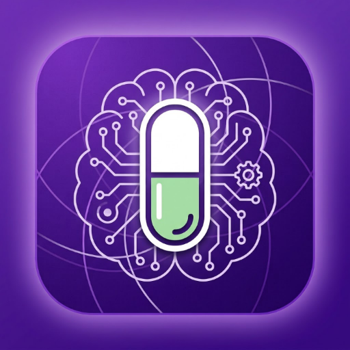
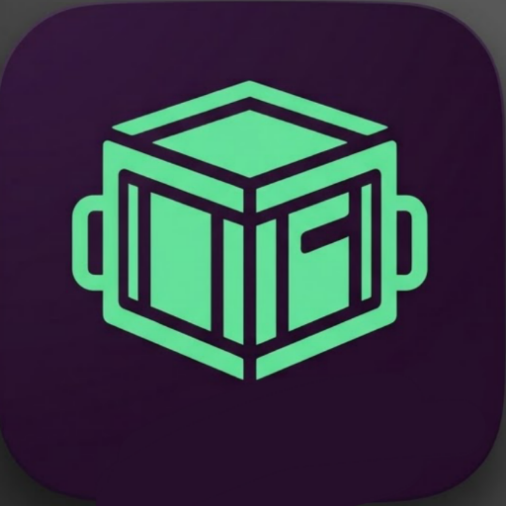
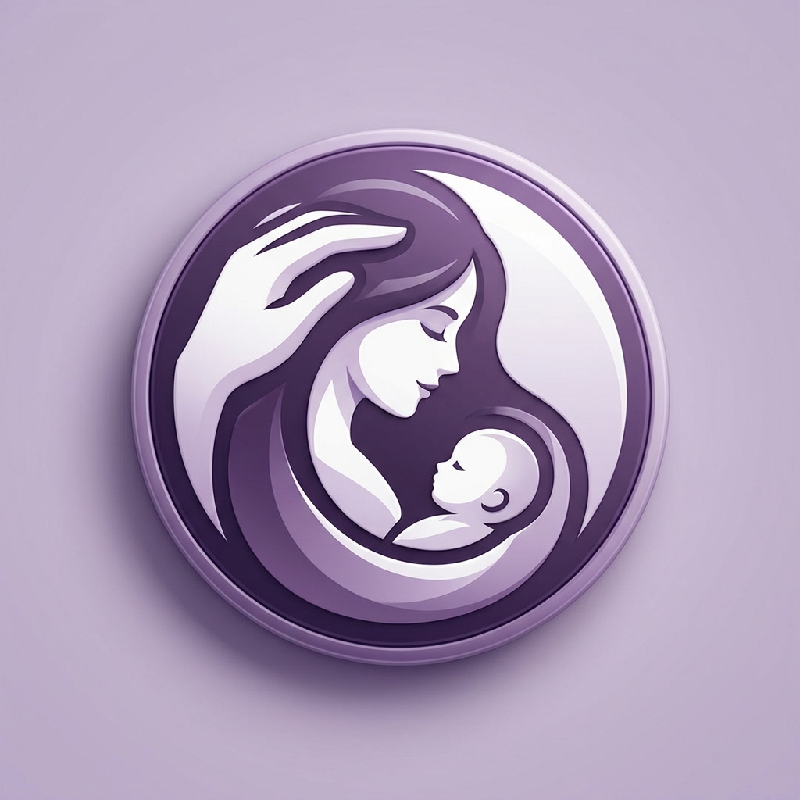

دليل المتدربين الصيدلي
دليل إلكتروني يهدف إلى مساعدة المتدربين على اكتشاف المعلومات والموارد التي قد تفيدهم خلال رحلتهم التدريبية.
قيد التطوير والتحسين زيارة المشروعمجموعة من المشاريع التي أعمل عليها لتقديم أفكار مفيدة في مجال الصيدلة والتثقيف الصحي والتعلّم الرقمي.

دليل إلكتروني يهدف إلى مساعدة المتدربين على اكتشاف المعلومات والموارد التي قد تفيدهم خلال رحلتهم التدريبية.
قيد التطوير والتحسين زيارة المشروع
تطبيق تعليمي تفاعلي لمراجعة المعلومات الصيدلانية والتدرّب على الأسئلة والبطاقات التعليمية.
متاح للتجربة جرّب التطبيق
مشروع لإدارة مخزون الصيدلية وتنظيم المنتجات والدفعات ومتابعة تواريخ الصلاحية وحركات المخزون، مع التركيز على سهولة الاستخدام والعمل دون إنترنت.
قيد التطوير والاختبار استكشف المشروع
مرجع صيدلاني مبسّط للبحث عن معلومات سلامة الأدوية أثناء الحمل والرضاعة، مع دليل تثقيفي عن مراحل الحمل وتكوّن الجنين.
متاح للاستخدام زيارة التطبيق